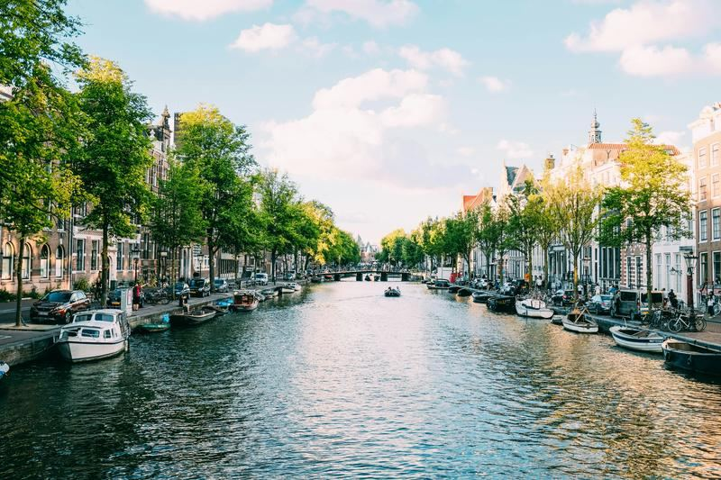
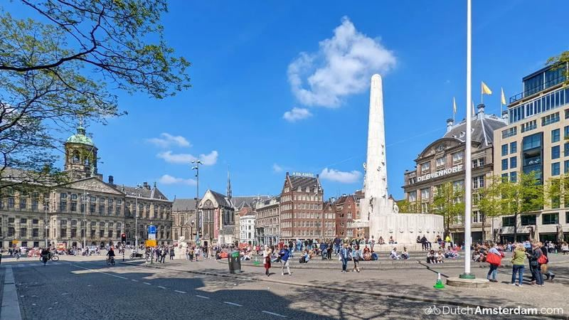
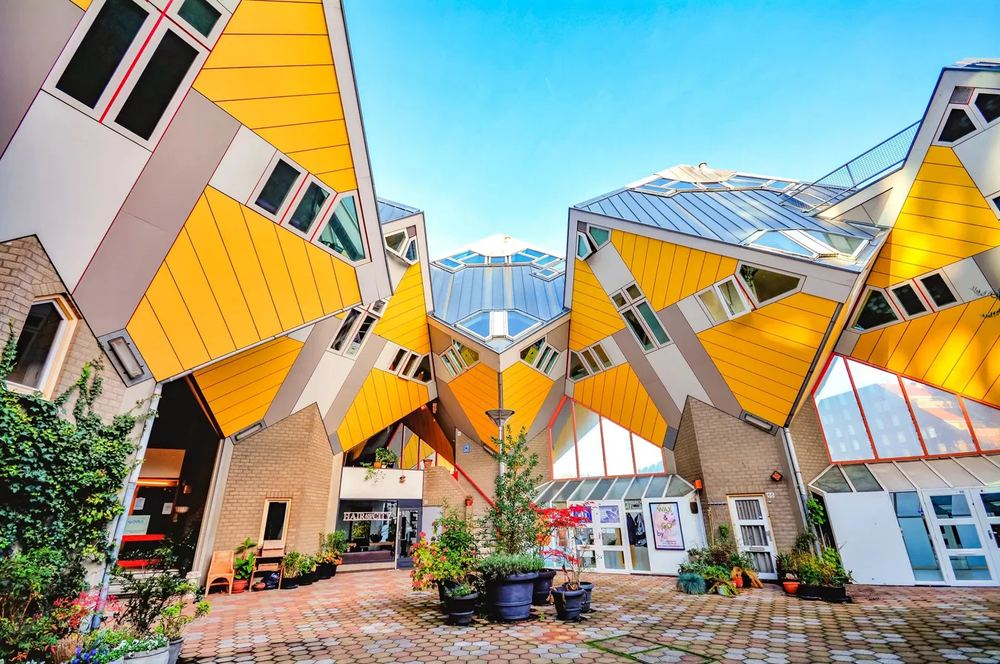
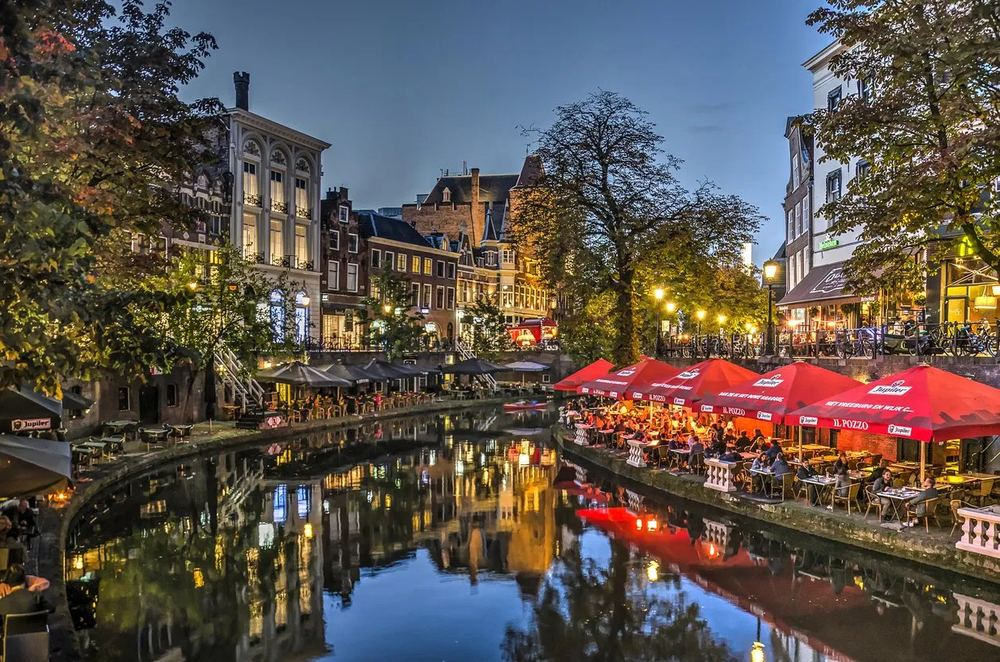
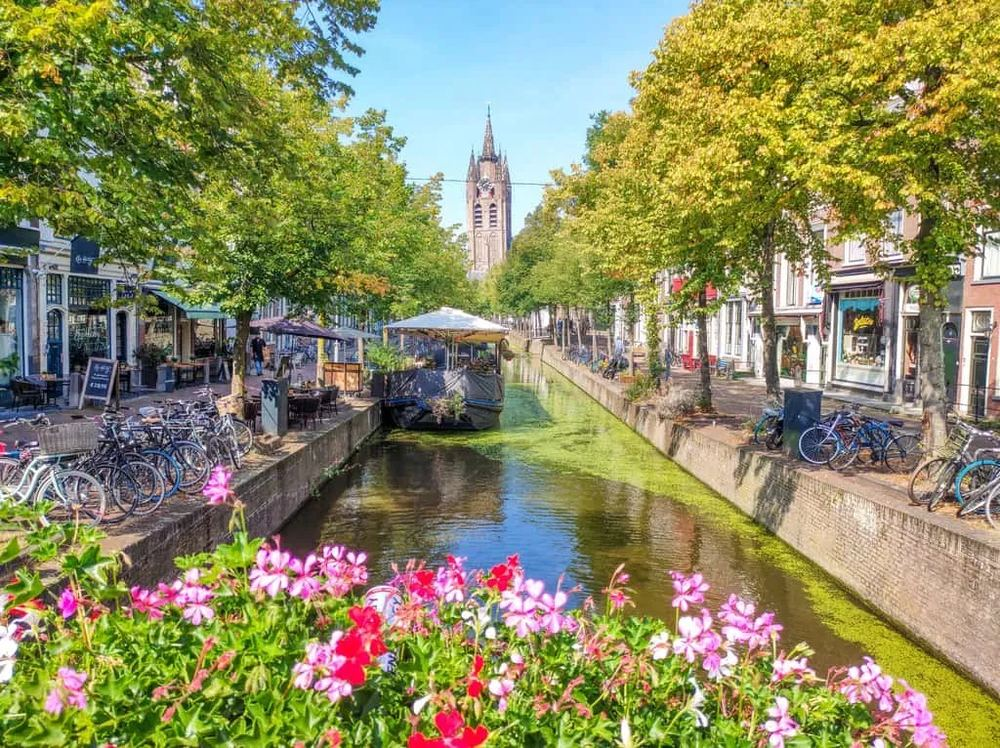
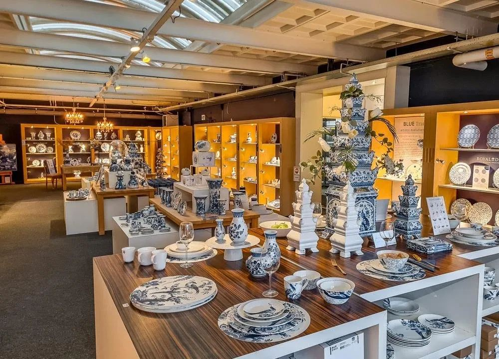
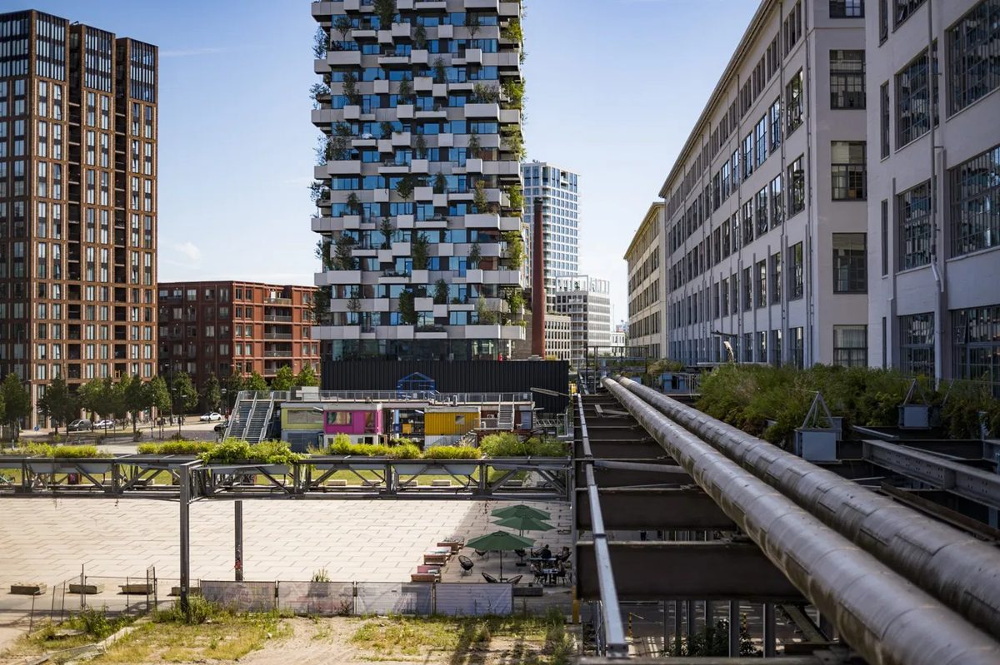
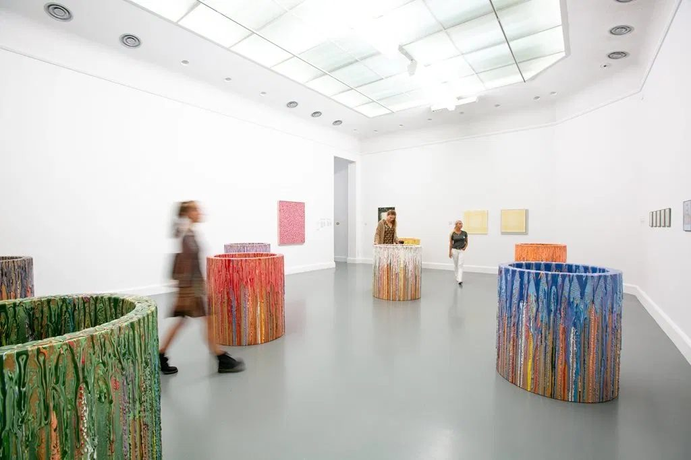
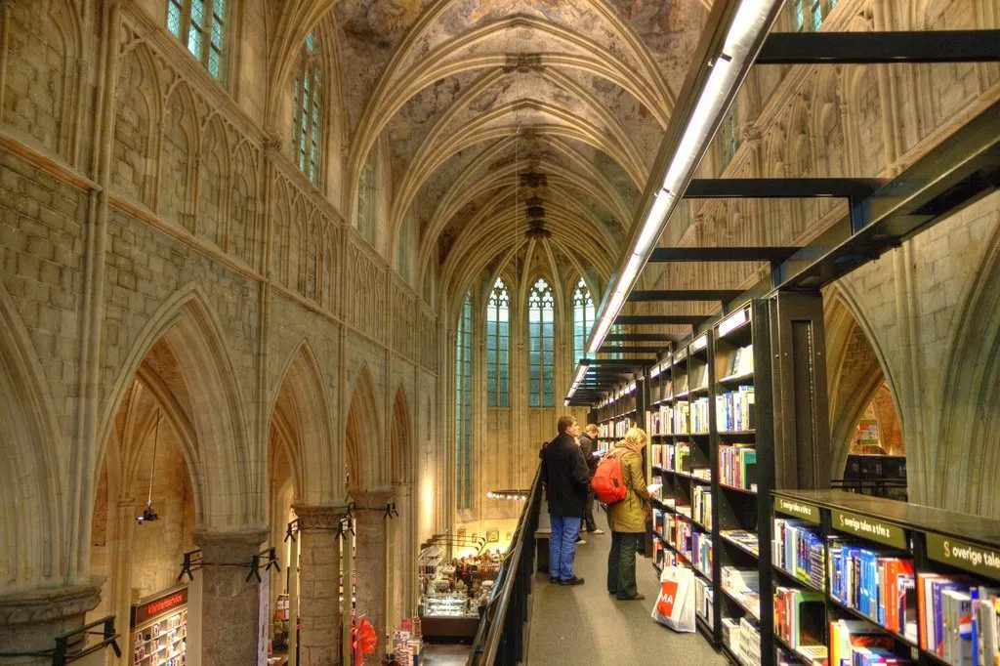

네덜란드 유학생 정착 가이드
타지에서 살아남기. 꼭 진행해야 하는 서류 절차부터 생활을 윤택하게 만들어줄 꿀팁, 자전거의 나라 그리고 규칙, 그리고 필요 이상의 배려까지.
모르면 손해보는 것들,
전부 여기 있어요.
처음 네덜란드에 도착하면 해야 할 것들이 한꺼번에 쏟아져요. BSN은 어디서 받는지, 보험은 언제까지 가입해야 하는지, 은행 계좌는 뭐가 좋은지. 하나씩 찾아보다 보면 하루가 다 가요.
다 챙긴 것 같은데도 뭔가 놓친 것 같은 불안함, 사소한 건 어디다 물어봐야 할지 모르는 답답함. KSAN이 그 막막함을 덜어주려고 만들었어요. 꼭 해야 하는 행정 절차부터 아무도 먼저 알려주지 않는 생활 꿀팁까지. 먼저 겪은 사람들이 직접 정리한 거예요.
KSAN이란?
KSAN (Korean Student Association in the Netherlands, 네덜란드 한국 학생회)는 네덜란드 전역의 한국 유학생들을 위한 비영리 단체예요. 대사관, 한인회, 기업과 연계하여 다양한 행사와 네트워킹 기회를 제공하고 있어요.
📋 정착 체크리스트
주황색 테두리 항목은 우선순위가 높은 필수 항목이에요.
✈️ 출국 전에 준비하기
🏠 도착하자마자
📝 한 달 안에 처리하기
🌱 자리잡기
🏘️ 하우징
네덜란드는 집을 일찍 찾는 게 정말 중요해요. 특히 암스테르담, 로테르담, 위트레흐트, 델프트처럼 학생이 많은 도시는 9~10월 신학기 시즌에 매물이 빠르게 줄어들어요. 마음에 드는 방을 찾았다면 조건을 꼼꼼히 확인한 뒤 최대한 빨리 움직이는 것이 좋아요.
집 구하는 방법
추천 웹사이트
- →Pararius ↗ 전문 임대 플랫폼
- →Funda ↗ 네덜란드 대표 부동산
- →Kamernet ↗ 학생 전용 주택
- →Huurwoningen ↗ 임대주택
- →HousingAnywhere ↗ 국제 학생 특화
기타 방법
- →페이스북 / 오픈채팅: 정보 다양, 직접 컨택 시 응답률 ↑
- →지역 부동산 중개인: 집 구할 확률 높음, 수수료 발생 (1~2개월치 월세)
하우징 지원 시 자주 요구되는 서류
- •여권 사본
- •재학증명서 또는 입학허가서
- •은행잔고증명 또는 재정 증빙
- •학생은 부모님 급여명세서를 요구받는 경우가 있어요
- •부모님 재정 증빙을 쓰는 경우 부모님 여권 사본 준비
- •집주인·플랫폼마다 요구 서류가 다르므로 제출 전 확인
주의사항 및 팁
-
! 사기 조심 계약 전 Kadaster(카다스터) ↗ 에서 Ownership Information(3.70유로)으로 집주인 실명 확인 가능
- •주소등록 (BRP) 가능한 집인지 확인 필수
- •학교에서 Housing certificate 혹은 Letter of Urgency 요청 → 하우징 우선권 도움
- •Open viewing 시 자기소개서 준비해 경쟁력 확보
- •학교 국제처에 문의 시 매물 추천 받을 수 있는지 확인
- •집 없을 시 Airbnb, 호텔, 호스텔 등 임시 거주도 고려
2025년 기준 학생방(룸) 평균 월세 (Kamernet 데이터)
보증금 (Waarborgsom)
- •법적 상한선: 월세의 최대 2개월치 (2023년 7월부터 법으로 제한)
- •계약 종료 후 14일 이내 반환이 원칙
- •손상이나 미납 월세가 있는 경우 최대 30일까지 연장 가능
- •현금 지불 시 꼭 영수증 받기. 계좌이체 권장
- ⚠️2개월 초과 요구 시 거부 가능, 시청에 신고 가능
계약서 서명 전 체크리스트
- →BRP 주소등록 가능 여부 확인
- →월세 외 Service costs 항목 및 금액 확인
- →가구 포함 여부 확인 (kaal/gestoffeerd/gemeubileerd)
- →계약 해지 조건 및 통보 기간 확인
- →보증금 금액 및 반환 조건 명시 여부 확인
- →집주인 실명 Kadaster로 확인 후 서명
Service Costs란?
월세 외에 별도로 청구되는 서비스 비용이에요. 계약서에 포함 항목이 명시되어 있어야 하고, 집주인은 매년 내역서를 제공해야 해요.
- •포함될 수 있는 항목: 가스/전기/수도, 인터넷, 공용공간 청소, 관리비
- •계약서에 항목과 금액이 명시되지 않은 경우 이의 제기 가능
- ⚠️가구 포함 여부에 따라 월세 차이가 크니 꼭 확인할 것
🛂 IND 등록
90일 이상 체류 시 Residence Permit(거주 허가증)이 필요해요. 학교를 통해 진행되는 경우가 대부분이지만, 직접 챙겨야 할 부분도 있어요.
- !V-number는 IND 예약, 문의, 서류 확인에 필요하므로 따로 저장해두기
- !9~10월 신학기 시즌엔 예약이 꽉 찰 수 있으므로 IND/학교 안내를 받으면 바로 예약 가능 여부 확인
- •일정 변경 필요 시 IND에 직접 연락해 조정 가능
- •거주허가증은 IND 안내에 적힌 지정 장소에서 수령
거주 허가증 기간
- •학업 기간 + 3개월 (최대 5년)
- ⚠️학업 중단 시 IND에 즉시 신고 필수
- •만료 3개월 전 갱신 신청 권장
허가증 재발급
- →경찰에 먼저 신고 (도난의 경우)
- →IND 홈페이지에서 재발급 신청
- •분실 시에도 동일하게 IND 신청
🪪 BSN / DigiD
BSN(Burgerservicenummer)은 네덜란드식 주민등록번호예요. 은행 계좌 개설, 병원 방문, 취업, 보조금 신청 등 모든 행정 절차에 필수라 도착하자마자 최우선으로 처리해야 해요.
발급 방법
- ⚠️도착 후 5일 이내 등록이 법적 의무 3개월 이내 미등록 시 거주허가증 취소 위험
- •4개월 이상 체류 시 시청(Gemeente)에서 거주지 등록(BRP)과 동시에 발급
- →지역 시청 홈페이지 또는 전화로 예약 후 방문. 예약이 늦게 잡힐 수 있어 가능하면 도착 전 또는 도착 직후 미리 확인
- •방문 후 BSN 번호 즉시 또는 우편으로 수령 (최대 4주 소요)
- ⚠️BSN은 평생 동일 번호. 꼭 보관해두기
DigiD란?
네덜란드 온라인 행정 인증 시스템이에요. BSN을 받은 후에만 신청 가능해요.
- •세금, 병원, 대학교, 정부 서비스 로그인에 필수
- •Zorgtoeslag, Huurtoeslag 등 보조금 신청 시 필요
- ★DigiD 앱 설치 권장. 생체인식, QR 로그인으로 보안성 ↑
신청 방법
- →digid.nl ↗에서 온라인 신청
- →신청 후 우편으로 활성화 코드 수령 (약 3~5일 소요). 우편함에 본인 이름이 표시되어 있는지 확인
- →코드 받으면 digid.nl에서 활성화
- ⚠️BSN 없이는 신청 불가. BSN 먼저 발급 후 신청
BSN → DigiD 순서 꼭 지키기
BSN 발급 → DigiD 신청 → 우편 활성화 코드 수령 → 활성화 순서로 진행해야 해요. DigiD 없이는 보조금 신청, 세금 신고 등 대부분의 온라인 행정이 불가능하니 BSN 받자마자 바로 신청하세요.
주소 변경
- •같은 시 내 이사: 현재 시청에 새 주소 신고
- •다른 도시로 이사: 새 도시 시청에 등록하면 이전 주소 자동 해제
- ⚠️이사 후 5일 이내 신고 의무
- •주소를 바꾸지 않으면 세금·보조금 서류를 놓치기 쉬워요
탈등록 (Deregistratie)
- →출국 5일 전 시청에 탈등록 신청
- •탈등록 후에도 BSN 번호는 유지됨
- •재입국 시 다시 BRP 등록하면 동일 BSN으로 재활성화
- ⚠️보조금 수령 중이면 탈등록 전 반드시 중단 신청
BSN 확인 방법
- →MijnOverheid ↗에서 DigiD로 로그인 후 확인
- •거주허가증, 세금 서류, 시청 등록 확인서에도 기재됨
- •확인 안 되면 시청에 직접 문의
🏦 은행 계좌
네덜란드 현지 결제 대부분이 Maestro 기반 직불카드. 온라인 결제, 월세 납부, 아르바이트 급여 수령 등을 위해 현지 계좌 필수.
공통 사항
- •세 은행 모두 영어 앱·웹사이트·고객 서비스 지원
- •네덜란드 IBAN 발급, iDEAL, Tikkie, Apple Pay·Google Pay 사용 가능
- •일부 은행은 BSN 없이 시작 가능하지만 정해진 기간 내 BSN/Tax ID 제출이 필요해요
- ⚠️BSN 없이 계좌를 열었더라도 90일 내 BSN/Tax ID 제출을 잊으면 계좌 기능이 제한될 수 있어요
- •필요 서류: 여권, 거주허가증(non-EU), 네덜란드 거주 주소, 재학증명서(학생 계좌)
Rabobank
국제학생에게는 개설 절차와 영어 지원 측면에서 우선순위가 낮아요
- -BSN 필수 (없으면 개설 불가)
- -영어 지원이 제한적인 편
- -대면 방문 필요, 개설까지 최대 5주 소요
계좌 개설 후 꼭 하세요
- •iDEAL 설정: 네덜란드 온라인 결제의 표준. 웹쇼핑, 학비 납부, 공과금 등 거의 모든 온라인 결제에 필요해요. 은행 앱에서 바로 연동돼요.
- •Tikkie 설치: 네덜란드식 더치페이 앱. 친구끼리 밥값, 장보기, 여행 경비 등을 나눌 때 필수. 네덜란드 IBAN이 있어야 사용 가능해요.
- •한국 송금: 한국에서 돈 보낼 때 일반 은행보다 Wise ↗가 수수료가 훨씬 저렴해요.
💊 건강보험 & 병원
네덜란드에서는 건강보험이 필수예요. 단, 유학생은 상황에 따라 가입해야 하는 보험 종류가 달라요.
사보험 (Private Insurance)
월 €40~60 수준
- •네덜란드 공공보험 가입 대상이 아님
- •한국 보험이 해외 커버되면 유지 가능
- •안 되면 국제 유학생 사보험 가입
- •학교에서 주로 AON 추천
기본보험 (Basisverzekering)
월 €130~160 수준
- ⚠️유급 근로를 시작하면 Dutch basic insurance 의무가 생길 수 있으므로 근무 시작 전 확인 필요
- •제로아워 계약도 포함
- •연간 본인부담금 최대 €385 (전문의·병원·처방약 등 이용 시 발생, 가정의 방문은 무료)
- •보조금(Zorgtoeslag) 신청 가능 → 금액은 매년 바뀌므로 공식 사이트에서 확인 보조금 섹션 ↗
- •아르바이트를 그만두면 다시 사보험으로 전환 필요
가정의 (Huisarts)
- •네덜란드에서는 아프면 병원이 아니라 먼저 가정의에게 가요. 가정의가 진료하고, 필요하면 전문의나 병원으로 연결해줘요. 도착하면 집 근처 가정의에 꼭 등록하세요.
- •가정의 역할: 1차 진료·처방·진단서 발급·전문의 소개. 전문의 진료는 가정의 소견서 없으면 불가해요 (응급 제외)
- •가정의 등록 시 필요 서류: 신분증, BSN, 보험 증서
- •영어 가능한 가정의는 ZorgkaartNederland ↗에서 검색 가능
- •치과(18세 이상), 물리치료, 정신건강 등은 기본보험에 포함 안 됨 → 추가 옵션 별도 가입
추천
- •사보험: AON ↗ (학교에서 가장 많이 추천하는 유학생 보험 중개사)
- •기본보험: Zilveren Kruis, VGZ, CZ, Menzis 등 (기본 커버리지는 전부 동일, 가격만 다름)
- •비교 사이트 Zorgwijzer ↗ (영어 지원)
약국 (Apotheek)
- •한국과 달리 처방전 없이 살 수 있는 약이 매우 제한적이에요
- •타이레놀(Paracetamol)은 약국과 슈퍼에서 구매 가능. 용량이 한국과 달라요
- •대부분의 약은 가정의 처방전이 있어야 받을 수 있어요
- •약국은 병원 건물 안에 없는 경우가 많아요. 처방전 받으면 따로 약국(Apotheek) 방문해야 해요
💰 보조금 (Toeslagen)
네덜란드 정부에서 저소득 거주자에게 주거비와 건강보험료를 보조해줘요. 유학생도 조건을 충족하면 신청 가능해요.
신청 조건
- •네덜란드에 합법적으로 거주하는 자
- •네덜란드 국민이거나 EU 시민, 또는 이민청(IND)에서 거주 허가를 받은 자
- •방과 화장실, 부엌을 다른 사람과 공유하지 않는 독립적인 스튜디오
- •소득과 자산 합계가 일정 수준 이하인 자
🆕 2026년부터 크게 바뀐 huurtoeslag!
2026 기준
- •보조금 계산 기준: 월세 €498.20까지 반영
- •월세가 더 높아도 신청 가능 (단, €498.20까지만 계산)
2026 기준
- •보조금 계산 기준: 월세 €932.93까지 반영
- ★월세 상한 없이 신청 가능 (단, €932.93까지만 계산)
- •자산 한도: 개인 €38,479 / 커플 €76,958
건강보험 보조금이란?
- •네덜란드 기본보험(Basisverzekering)에 가입한 저소득자 대상
- •월 최대 €144~219 환급 → 보험료 부담을 크게 줄여줘요
- •아르바이트해서 기본보험 전환한 학생이면 거의 대부분 해당돼요
- •학업만 하면서 사보험에 가입한 경우에는 신청 불가
공통 신청 방법
- →주거 보조금, 건강보험 보조금 모두 아래에서 신청할 수 있어요.
toeslagen.nl ↗ - →필요한 것: DigiD, BSN, 네덜란드 은행 계좌
- •최대 3개월 소급 신청 가능. 늦게 알아도 괜찮아요
🚆 교통수단
네덜란드는 대중교통이 잘 발달해 있어요. OV-chipkaart, 신용카드, Apple Pay, Google Pay 모두 사용 가능해요.
한국과 다른 점
- •기차 (Trein): 도시 간 이동. NS(네덜란드 국철) 운영. 앱은 NS app.
- •트램 (Tram): 한국에서는 보기 드문 교통수단. 도심 도로 위를 달리는 전철이에요.
- •메트로 (Metro): 한국 지하철과 비슷해요.
- •버스 (Bus): 도심 및 근교 이동. 도시마다 운영사가 달라요 (GVB, RET, HTM 등).
- •자전거: 네덜란드 일상 교통수단. 짧은 거리는 자전거가 가장 빠를 때도 많아요.
OV-chipkaart / OV-pas
- •개인 카드: 정기권·자동충전, 분실 시 잔액 보상
- •익명 카드: 등록 없이 바로 사용, 분실 시 보상 불가
- •OV-chipkaart와 OV-pas는 같은 역할이에요. OV-chipkaart는 단종 예정이라 새로 산다면 OV-pas를 추천해요
- •OV-pas 유효기간은 5년이고 가격은 €6예요
- •버스·트램·메트로는 승차 시 Check-in, 하차 시 Check-out 모두 태그해야 해요
OVpay
- +신용카드, 체크카드로 바로 탑승
- +Apple Pay, Google Pay도 사용 가능
- •탑승·하차 시 같은 카드로 태그해야 해요
- •일회용 종이카드도 역에서 구매 가능
📱 통신 & 인터넷
입국 초기에는 로밍이나 선불 유심으로 버티다가 정착하면 월정액으로 전환하는 게 일반적이에요. 월정액 개통 시 BSN, IBAN, 신분증 필요해요.
한국 유심 + eSIM 추가
- +한국 문자·전화 그대로 받을 수 있어요
- +카카오톡 인증, 한국 계정 관리 편함
- •eSIM 지원 기기여야 해요
- •네덜란드 통신사 eSIM으로 현지 번호 추가
네덜란드 유심으로 완전 교체
- +요금제 선택 폭 넓음
- -한국 문자·전화 못 받아요
- •한국 인증 문자가 필요한 경우 불편할 수 있어요
추천 통신사
- ★Youfone: 가성비 최고, 유학생에게 많이 추천
- •Vodafone
- •KPN
- •T-Mobile (Odido)
가정용 인터넷
- •Ziggo: 사용자 많음
- •KPN, T-Mobile Thuis: 기가 속도
- •Budget Alles-in-1: 저렴하지만 속도 낮음
- ⚠️개통까지 1~2주 소요될 수 있어요
💧 물세 / 쓰레기세
거주 형태에 따라 직접 내는 경우도 있고, 아예 안 내는 경우도 있어요.
나한테 해당되는 경우
- ✓독립 스튜디오 / 원룸을 직접 계약한 경우 → 고지서가 본인한테 직접 와요
- ✓쉐어하우스인데 학생들끼리만 사는 독립 주거인 경우 → 가장 오래 등록된 사람한테 고지서가 와요. 룸메이트끼리 나눠 내야 해요.
- ✗학교 연계 기숙사 (SSH, DUWO 등)인 경우 → 기관이 납부해요. 신경 안 써도 돼요.
- ✗집주인과 함께 사는 방 임차인 경우 → 고지서가 집주인한테 가요. 신경 안 써도 돼요.
물세 (Waterschapsbelasting)
- •수자원·홍수 방지 관리 비용
- •1인 가구 기준 연간 약 €200~300 수준 (도시마다 다름)
- •service cost와는 별개예요
쓰레기세 (Afvalstoffenheffing)
- •쓰레기 수거·분리배출 운영 비용
- •1인 가구 기준 연간 약 €300~400 수준 (도시마다 다름)
- •1월 1일 기준 등록 인원 수로 계산돼요
감면 신청 (Kwijtschelding)
- •소득이 낮으면 감면 신청 가능해요 (독립 주거 직접 임차자만 해당)
- •조건은 도시마다 달라요. 본인 시청 홈페이지에서 "kwijtschelding" 검색
- •DigiD로 온라인 신청 가능
🥘 한식당 리스트
아래 리스트는 참고용이며 여기에 없는 숨은 맛집들도 많습니다.
🛒 장보기 & 생활용품
네덜란드에서는 “무엇을 사야 하는지”에 따라 가는 곳이 달라져요. 식료품은 슈퍼마켓, 한식 재료는 아시안/한인 마트, 생활용품은 drogist나 생활용품 매장, 전자제품은 전문 쇼핑몰을 활용하면 좋아요.
Albert Heijn
네덜란드에서 가장 흔하게 보이는 슈퍼마켓. 가격은 조금 높은 편이지만 지점이 많고, Bonuskaart 할인이 자주 있어요.
- •Bonuskaart 등록 권장
- •셀프계산대/zelfscan 사용 가능
- •도시 중심부에 지점이 많음
Jumbo / Dirk / PLUS
일상 장보기에 무난한 슈퍼마켓. 지점마다 가격과 품목 차이가 있어 집 주변 마트를 비교해보는 것을 추천.
- •식재료, 간식, 생활용품 구매 가능
- •할인 상품 확인하면 생활비 절약 가능
- •지역마다 가까운 브랜드가 달라요
Lidl / Aldi
가격이 비교적 저렴한 편. 기본 식재료, 빵, 유제품, 냉동식품을 저렴하게 사기 좋아요.
- •채소·과일·빵류 가성비 좋음
- •브랜드 선택지는 적은 편
- •생활비 줄이고 싶을 때 활용 추천
Amazing Oriental
네덜란드 최대 규모의 아시안 슈퍼마켓 체인. 라면, 쌀, 소스, 냉동식품, 두부, 아시안 식재료를 구하기 좋아요.
- •여러 주요 도시에 지점 있음
- •한식 재료도 일부 구매 가능
- •방문 전 지점과 영업시간 확인 권장
Shilla
한국·일본 식재료를 전문적으로 판매하는 마트. 김치, 장류, 냉동식품, 간편식 등을 찾기 좋아요.
- •한국 식재료 종류가 비교적 많음
- •온라인 주문 가능
- •일부 지점은 도시 중심부와 거리가 있어요
JoyBuy
아시안 식재료와 생활용품을 온라인으로 주문할 수 있는 서비스. 쌀, 라면, 냉동식품처럼 무거운 물건 주문에 편해요.
- •일부 상품은 11:00 전 주문 시 당일 배송 가능
- •23:00 전 주문 시 다음날 배송 옵션이 자주 보여요
- •배송 시간은 지역·상품·재고에 따라 달라져요
Flink
식료품과 생활 필수품을 앱으로 주문할 수 있는 온라인 장보기 서비스. 급하게 필요한 물건이 있을 때 유용해요.
Picnic
정기 장보기나 무거운 물건 주문에 좋음. 배달 슬롯을 예약하는 방식이라 미리 계획할 때 편해요.
AH Online
Albert Heijn 온라인 장보기. 자주 먹는 식재료를 한 번에 주문하거나 무거운 물건을 시킬 때 편리.
Bol.com
전자제품, 생활용품, 책, 작은 자취템을 온라인으로 살 때 많이 쓰는 쇼핑몰. 배송이 빠른 편이에요.
Amazon
생활용품, 전자제품, 소형 가전 등을 비교해보기 좋아요. 배송 국가와 반품 조건을 확인하세요.
TEMU
저렴한 생활 소품을 찾을 때 쓰는 경우가 있어요. 배송 기간과 품질 편차는 감안하는 것이 좋아요.
Kruidvat / Etos
샴푸, 세제, 화장품, 생리대, 비타민, 간단한 일반의약품을 사기 좋은 곳. 학생들은 할인 많은 Kruidvat을 자주 이용해요.
- •처방전 없는 기본 의약품 구매 가능
- •Kruidvat과 Etos는 감기약, 진통제, 비타민, 화장품 등을 살 수 있는 drogist예요
- ⚠️항생제나 처방약은 drogist가 아니라 Apotheek에서 받아야 해요
- •1+1, 2+1 할인 자주 진행
- •화장품·위생용품 구매에 편함
Holland & Barrett
영양제, 프로틴, 건강식품, 비건 제품을 찾기 좋은 곳. 비타민이나 보충제를 살 때 자주 보게 되는 매장.
Action / HEMA
수납용품, 문구, 주방용품, 청소도구, 작은 생활 잡화를 사기 좋아요. 특히 Action은 가격이 저렴한 편.
IKEA
침대, 책상, 의자, 조명, 수납장, 주방용품까지 한 번에 구매 가능. 이사 초기 자취템을 맞추기 좋아요.
JYSK
침구, 매트리스, 수건, 수납용품을 사기 좋은 곳. IKEA보다 가까운 지점이 있으면 대안으로 좋음.
Primark
잠옷, 양말, 수건, 슬리퍼, 기본 의류, 작은 생활용품을 저렴하게 사기 좋아요. 도착 직후 급한 물건 살 때 유용.
MediaMarkt
전자제품을 직접 보고 살 수 있는 매장. 충전기, 어댑터, 헤드폰, 소형가전, 노트북 주변기기를 급하게 살 때 편해요.
Coolblue
네덜란드에서 많이 쓰는 전자제품 쇼핑몰. 배송과 반품이 비교적 편리해서 학생들도 자주 이용해요.
Gall & Gall
네덜란드에서 흔히 보이는 주류 전문점. 와인, 맥주, 위스키 등 다양한 주류 구매 가능.
Dirck III / Mitra
주류를 비교적 저렴하게 구매할 수 있는 매장. 할인 상품이 있을 때 활용하기 좋아요.
나이 확인
네덜란드에서 주류 구매는 18세 이상만 가능. 계산 시 신분증 확인을 자주 요구해요.
로컬 마켓 활용
- •대부분 도시에는 주 1~2회 열리는 시장(Markt)이 있음
- •채소, 과일, 생선, 치즈를 마트보다 저렴하게 살 수 있는 경우가 많음
- •마감 시간 직전에는 할인 판매하는 경우도 있음
- •“도시명 + markt”로 검색하면 일정과 위치 확인 가능
- •예: Albert Cuyp Markt, Haagse Markt, Blaak Markt
고기 구매 팁
- •대부분은 Albert Heijn, Jumbo, Lidl 같은 슈퍼마켓에서 구매해도 충분
- •품질 좋은 고기나 특정 부위를 찾는다면 Slagerij(정육점) 이용 가능
- •양념용 고기, 두꺼운 스테이크, 특정 부위는 정육점에서 문의해보는 것도 좋음
- •가격은 슈퍼마켓보다 높은 편이에요
마트 이용 팁
- •일요일·공휴일은 영업시간이 짧거나 지점별로 달라요
- •비닐봉투는 유료라 장바구니를 들고 다니는 것이 좋아요
- •플라스틱 백은 1유로 가까이 비싸서 장바구니를 챙기는 것을 추천해요
- •일부 매장은 현금보다 카드 결제가 훨씬 일반적
- •self-checkout 이용 시 랜덤 검사(random check)를 자주 해요
- •Albert Heijn 앱에 로그인하고 Bonuskaart를 찍으면 자주 산 상품에 개인화 할인이 붙어요
- •유통기한이 가까운 음식에 할인 스티커가 붙는 경우가 있어 마감 할인도 확인해보세요
Statiegeld & 재활용
- •Statiegeld 로고가 있는 플라스틱 병과 캔은 마트 반납 기계에서 보증금을 돌려받아요
- •작은 병과 캔은 보통 €0.15, 큰 플라스틱 병은 €0.25 수준이에요
- •마트의 반납 기계에 넣으면 영수증 형태로 환급 가능
- •환급 영수증은 계산대나 셀프계산대에서 사용해요
- •지역마다 분리수거 방식이 다르므로 거주지 안내 확인 필요
할인을 위한 앱
Albert Heijn Bonuskaart, Jumbo Extra’s 등은 할인 상품을 살 때 유용해요. 자주 가는 마트 앱 설치 권장.
로컬 마켓
채소, 과일, 생선은 마트보다 시장이 저렴할 때가 있어요. 도시별 주간 마켓을 찾아보는 것도 추천.
Too Good To Go
카페, 베이커리, 마트의 남은 음식을 저렴하게 구매할 수 있는 앱. 생활비를 아끼고 싶을 때 유용해요.
✈️ 여행 정보









🌧️ 날씨 & 옷차림
네덜란드 날씨는 변덕스럽기로 유명해요. 맑다가도 갑자기 비가 쏟아지고, 여름에도 쌀쌀할 수 있어요. 미리 알고 준비하면 훨씬 편해요.
여름에 시계를 1시간 앞당기는 제도예요. 봄엔 해가 늦게 지고, 가을엔 다시 원래대로 돌아와요. 한국에는 없어서 처음엔 낯설 수 있어요.
- •튤립 시즌. 일교차 크고 변덕스러워요
- •3월 마지막 일요일부터 섬머타임 시작
- •얇은 패딩 + 방수 재킷
- •겹쳐 입기 필수 (아침저녁 쌀쌀해요)
- •섬머타임으로 해가 늦게 져요 (6월엔 밤 10시 넘게까지)
- •맑은 날도 많지만 갑작스러운 소나기 잦아요
- •가디건 항상 챙기기
- •갑작스러운 소나기에 대비해 얇은 방수 재킷이나 우산 챙기기
- •선크림 + 선글라스 필수. 자외선 생각보다 강해요
- •흐린 날도 많지만 9월~10월 초에는 맑은 날과 흐린 날이 반복돼요
- •바람이 강하고 날씨가 변덕스러워요
- •10월 마지막 일요일 섬머타임 종료. 갑자기 해가 빨리 져서 당황할 수 있어요
- •방수 재킷 필수
- •가디건 같은 얇은 겉옷을 함께 챙기면 좋아요
- •우산은 바람에 뒤집혀요. 후드나 방수 재킷이 더 실용적이에요
- •눈은 드물지만 체감온도 매우 낮아요
- •겨울에는 일출이 8~9시쯤으로 늦고, 오후 4시면 해가 져요
- •두꺼운 코트나 롱패딩
- •내복 + 목도리 + 장갑 + 비니
🚨 긴급 연락처
비상 상황에서 당황하지 않도록 미리 저장해두세요. 네덜란드는 한국과 시스템이 달라서 어떤 번호를 언제 써야 하는지 알아두는 게 중요해요.
112
- •경찰, 소방, 구급대 통합
- •영어 가능
- ⚠️진짜 응급상황에만 사용
0900-8844
- •분실, 경미한 사고, 신고 등
- •영어 대응 가능
- •응급이 아닐 때 사용
Huisartsenpost
- •야간·주말 응급 의료 상담
- •방문 전 반드시 전화 먼저
- •지역마다 번호 달라요. 검색 후 저장
대사관 & 한인 지원
- ★주네덜란드 한국대사관: +31 70 740 0200
- ★사건사고 긴급전화 (근무시간 외, Korean nationals only): +31 64 264 8412
- •여권 분실, 긴급 귀국, 사건·사고 등
- •영사콜센터 (한국, 24시간): +82 2 3210 0404
정신건강 상담
- •113: 자살예방 상담 (네덜란드, 24시간)
- •GP에 등록되어 있다면 정신건강 문제도 GP에게 먼저 상담 가능
- •대면 상담이 부담스러우면 MIND Korrelatie, The Listening Line 같은 통화 상담도 고려
- •외국어 상담 가능
- •학교 내 학생 심리상담 서비스도 활용하세요
유용한 앱
- •NL-Alert: 네덜란드에 있는 모든 폰에 자동 수신돼요. 등록 불필요. 매월 첫 번째 월요일 낮 12시에 테스트 문자가 와요 (놀라지 마세요)
- •사이렌: 매월 첫 번째 월요일 낮 12시에 전국 사이렌 테스트도 함께 울려요. 처음 들으면 무서울 수 있지만 정상이에요. 이 시간 외에 사이렌이 들리면 실내로 대피하고 창문을 닫으세요
- •112NL 앱: GPS 위치 자동 전송. 응급 신고 시 유용해요
- •네덜란드 적십자사 앱: 응급 처치 가이드와 재난 관련 알림을 미리 숙지하기 좋아요
- •외교부 해외안전여행 앱: 국가별 안전 정보 + 영사 연락처
📦 네덜란드 택배 시스템
네덜란드는 부재중일 때 택배가 이웃집, 픽업포인트, 락커로 이동되는 경우가 많아요.
한국처럼 항상 문 앞에 두고 가는 방식은 아니어서, 택배 앱과 Track & Trace 확인이 중요해요.
PostNL
네덜란드에서 가장 흔하게 사용하는 택배사
- •부재 시 이웃집이나 PostNL Point로 이동돼요
- •Track & Trace로 실시간 배송 확인 가능
- •앱에서 배송 선호 설정 가능
- •슈퍼마켓, Primera 등에서 픽업 가능
DHL
온라인 쇼핑몰에서 자주 사용
- •ServicePoint 및 Locker 수령 가능
- •배송 날짜·장소 변경 가능
- •일부 반품은 QR 코드 접수 가능
- •판매처에 따라 옵션이 달라져요
UPS
국제배송·비즈니스 배송에서 자주 사용
- •부재 시 UPS Access Point로 이동 가능
- •픽업 시 신분증을 요구해요
- •앱에서 배송 옵션 변경 가능
- •정해진 기간 내 수령하지 않으면 반송돼요
배송 받을 때 확인할 것
- •PostNL, DHL, UPS 앱 설치 권장
- •주소 입력 시 집 번호, 추가 번호, 방 번호까지 정확히 입력
- •기숙사·아파트는 건물명, 층, 방 번호까지 적는 것이 안전
- •문패 이름과 주문자 이름이 다르면 배송 문제가 생겨요
- •본인이 사는 건물의 택배 수령 장소, 로비, 락커 위치를 미리 확인해두는 것을 권장
- •고가 물품은 집 배송보다 픽업포인트 수령 권장
택배가 없음
이웃집 → 로비 → 우편함 → 픽업포인트 순서로 확인. 그래도 없으면 판매처나 택배사에 문의.
수령 기간 놓침
픽업포인트나 락커에 도착한 택배는 정해진 기간 내 수령 필수. 기간을 넘기면 반송돼요.
추가 비용 발생
EU 외 국가에서 오는 택배는 VAT·관세·통관 수수료가 붙어요. 수령하지 못해 반송되면 발송인에게 return shipping fee가 생겨요.
💼 아르바이트
네덜란드에서 아르바이트를 할 때는 근무 가능 시간, 근로 허가, 보험 여부를 먼저 확인해야 해요. 특히 Non-EU 학생은 고용주가 근로 허가를 신청해야 하므로, 지원 전 조건을 알고 있는 것이 중요해요.
근무 시간 제한
- •학기 중 주 최대 16시간 근무 가능
- •또는 6·7·8월 풀타임 근무 가능
- •두 옵션 중 하나를 선택하는 방식
TWV 필요
- •고용주가 근로 허가(TWV)를 신청해야 함
- •허가 절차 때문에 채용이 느려져요
- •일부 업체는 Non-EU 학생 채용을 꺼려요
근무 제한 없음
- •일반적으로 별도 근로 허가 불필요
- •근무 시간 제한 없음
- •단, 학업과 병행 가능한지 현실적으로 판단 필요
2026년 최저시급 (세전 / Gross)
| 나이 | 최저시급 | 참고 |
|---|---|---|
| 21세 이상 | €14.71 | 성인 최저시급 |
| 20세 | €11.77 | 청소년 최저시급 적용 |
| 19세 | €8.83 | 청소년 최저시급 적용 |
| 18세 | €7.36 | 청소년 최저시급 적용 |
한인 식당
한국어 사용 가능. 신입생도 비교적 지원하기 쉬운 편.
카페·레스토랑
영어만으로 지원 가능한 경우도 많음. 호텔, 카페, 패스트푸드점, 매장 스태프 포함.
배달
Uber Eats, Thuisbezorgd 등. 자전거 이동에 익숙하다면 고려 가능. 계약 조건 확인 필수.
이벤트 스태프
전시회, 축제, 컨퍼런스, 스포츠 행사 등 단기 알바 가능. 일정이 유연한 학생에게 적합.
튜터링
한국어, 영어, 수학, 경제 과외 등. 개인 역량을 살릴 수 있고 시간 조율이 비교적 쉬움.
통역·번역
기업 미팅, 박람회, 전시회, 비즈니스 방문 등에서 한국어·영어 능력을 활용 가능.
가이드
한국인 관광객, 학교 투어, 기업 방문 프로그램, 박람회 가이드 등 프리랜서 형태로 가능.
프리랜서
디자인, 영상 편집, SNS 관리, 콘텐츠 제작, 웹 개발 등 개인 포트폴리오가 있으면 유리.
어디서 구하나
- •Indeed, LinkedIn, Glassdoor
- •학교 커리어 포털 및 Student Assistant 공고
- •한인 커뮤니티, Facebook 그룹
- •지인 소개, KSAN 네트워크
- •식당·카페·매장 직접 방문 후 문의
시작 전 체크
- •BSN 및 네덜란드 은행 계좌 준비
- •영어 CV 1페이지로 정리
- •계약서, 시급, 근무 시간 확인
- •급여명세서(payslip) 제공 여부 확인
- •유급 근로 시작 시 Dutch basic health insurance 대상 여부 확인
- •보험 전환 시 Healthcare Allowance 신청 가능 여부 확인
무허가 근무 주의
Non-EU 학생은 TWV 없이 일하면 문제가 생겨요. 지원 전 고용주가 근로 허가 절차를 알고 있는지 확인하세요.
무계약·현금 지급 주의
계약서 없이 일하거나 현금으로만 지급하는 알바는 급여·보험·세금 문제가 생겨요.
건강보험 확인
유급 근로를 시작하면 Dutch basic health insurance 의무가 생겨요. 보험 미가입 시 벌금이 나와요.
🎫 뮤지엄 카드
Museumkaart는 네덜란드 전역 500곳 이상의 박물관 및 미술관을 1년 동안 이용할 수 있는 카드예요. 박물관을 자주 가거나 네덜란드 안에서 여행을 많이 할 예정이라면 가성비가 좋은 편이에요.
가격 (2026년 기준)
| 대상 | 가격 |
|---|---|
| 성인 | €75 |
| 18세 미만 | €39 |
| 카드 갱신 | €69 |
- •카드 유효 기간은 발급일 기준 1년이며, 갱신 여부 선택 가능
- •실물 카드 재발급 시 €4.95 추가 비용
- ★대부분의 인기 박물관 입장료가 €15~25 정도라 3~4곳만 방문해도 본전을 뽑을 수 있어요
유학생에게 추천하는 이유
- •네덜란드 여행할 때 자연스럽게 활용 가능
- •비 오는 날 가기 좋은 실내 활동
- •친구나 가족이 방문했을 때 함께 가기 좋음
- •1년 동안 부담 없이 여러 박물관 방문 가능
Rijksmuseum
네덜란드 대표 국립미술관. 렘브란트의 <야경>을 포함해 네덜란드 황금시대 작품을 볼 수 있어요.
Van Gogh Museum
반 고흐 작품을 가장 많이 소장한 미술관. Museumkaart 사용 가능하지만 온라인 시간 예약 권장.
Mauritshuis
페르메이르의 <진주 귀걸이를 한 소녀>로 유명한 미술관. 헤이그 당일치기와 함께 가기 좋아요.
Anne Frank Huis
Museumkaart 사용 가능. 단, 온라인 예약 필수이고 예약 수수료가 별도로 붙어요.
Naturalis
공룡 화석과 자연사 전시로 유명한 네덜란드 대표 자연사 박물관. 레이던 방문 시 추천.
Kunsthal
현대미술, 디자인, 사진 전시가 자주 열리는 로테르담 대표 전시 공간.
어디서 살 수 있나
- •Museumkaart 참여 박물관에서 바로 구매 가능
- •온라인 신청 가능
- •실물 카드 또는 디지털 카드 사용 가능
- •온라인 신청 시 네덜란드 주소가 필요해요
사용 팁
- •인기 박물관은 Museumkaart가 있어도 시간 예약이 필요한 경우가 많아요
- •특별전은 추가 요금이 붙어요
- •방문 전 museum.nl에서 해당 박물관이 포함되는지 확인 권장
- •여행 계획이 있다면 도시별 박물관을 묶어서 가면 효율적
📅 공휴일 & 축제
네덜란드는 공휴일 수가 많지는 않지만, King's Day처럼 전국 분위기가 완전히 달라지는 날들이 있어요. 일부 공휴일은 매년 날짜가 바뀌므로, 학교 캘린더와 공식 일정을 함께 확인하는 것이 좋아요.
2026년 네덜란드 공휴일
| 날짜 | 공휴일 | 참고 |
|---|---|---|
| 1월 1일 | New Year's Day | 신정이에요 |
| 4월 3일 | Good Friday | 성금요일. 휴무 여부는 학교/회사별로 달라요 |
| 4월 5~6일 | Easter | 부활절 일요일·월요일이에요 |
| 4월 27일 | King's Day | 네덜란드 최대 규모의 전국 축제예요 |
| 5월 5일 | Liberation Day | 해방의 날. 휴무 여부는 기관/계약에 따라 달라요 |
| 5월 14일 | Ascension Day | 승천절이에요 |
| 5월 24~25일 | Pentecost | 오순절 일요일·월요일이에요 |
| 12월 25~26일 | Christmas | 크리스마스 1·2일차예요 |
Sinterklaas
공식 공휴일은 아니지만 네덜란드에서 중요한 문화 행사예요. 성 니콜라스가 12월 6일에 방문한다고 믿고, 전날인 Sinterklaas 이브에 가족과 친구들이 선물을 주고받아요.
New Year's Eve
공식 공휴일은 아니지만 밤에 불꽃놀이가 많아요. 소음이 크고 거리 이동도 복잡해져요.
New Year's Day
신정 공휴일이에요. 많은 상점과 기관이 닫을 수 있어 장보기나 이동 계획을 미리 세우는 것이 좋아요.
King's Day
전국이 주황색으로 물드는 네덜란드 대표 축제예요. 암스테르담은 특히 붐비고 교통 통제가 많아 미리 이동 계획을 세우는 것이 좋아요.
Carnaval
주로 마스트리흐트, 에인트호번 등 남부 지역에서 크게 열리는 축제예요. 코스튬을 입고 퍼레이드와 거리 행사를 즐겨요.
WorldPride Amsterdam 2026
2026년 암스테르담에서 열리는 대형 Pride 행사예요. Canal Parade는 8월 1일 예정이에요. 숙소와 교통이 매우 혼잡해져요.
Tulip Season
봄철 튤립 시즌이에요. Keukenhof와 튤립밭 방문이 인기이고, 주말에는 사람이 많아 사전 예약을 권장해요.
Music Festivals
여름에는 도시별 음악 축제와 야외 행사가 많아요. 티켓은 조기 매진되는 경우가 있어 미리 확인할 필요가 있어요.
Dodenherdenking
공휴일은 아니지만 중요한 추모일이에요. 저녁 8시에 2분간 묵념이 진행되며, 공공장소에서도 조용히 참여하는 분위기예요.
공휴일 전후 생활 팁
- •공휴일에는 상점, 은행, 관공서 영업시간이 달라져요
- •King's Day, Pride 같은 대형 행사 기간에는 대중교통이 매우 혼잡해요
- •여행·숙소·기차표는 행사 시즌 전에 미리 예약하는 것을 권장해요
- •사람 많은 축제에서는 소매치기와 휴대폰 분실을 주의하세요
🚗 운전면허 사용 & 변경
한국 운전면허증이 있어도 네덜란드에서 계속 운전할 수 있는 것은 아니에요. 비EU/EEA 면허는 네덜란드 거주 시작 후 일정 기간만 사용할 수 있으므로, 장기 거주 예정이라면 Dutch driving licence로 교환 가능 여부를 미리 확인하는 것이 좋아요.
한국 면허로 임시 운전
- •한국 면허는 비EU/EEA 면허로 분류
- •네덜란드 거주 시작 후 최대 185일까지만 운전 가능
- •185일 이후에는 Dutch driving licence가 있어야 운전 가능
국제운전면허증 함께 소지
- •한국 면허증의 보조 번역 서류처럼 활용
- •여권, 한국 운전면허증, 국제운전면허증 함께 소지 권장
- ⚠️국제운전면허증이 185일 제한을 늘려주지는 않음
Dutch licence로 교환
- •시청(Gemeente)에서 Rijbewijs omwisselen으로 신청
- •RDW가 교환 가능 여부를 심사
- •교환이 불가능하면 이론·실기 시험을 봐야 해요
CBR 건강신고서
mijn.cbr.nl에서 Gezondheidsverklaring 작성. 비EU/EEA 면허 교환 시 필요한 서류예요.
시청 예약
거주지 Gemeente에서 Rijbewijs omwisselen 예약. 등록된 거주지 기준으로 신청해야 해요.
RDW 심사
서류 제출 후 RDW가 심사해요. 처리 기간은 보통 몇 주 걸리고, 그동안 기존 면허를 제출해야 해요.
교환 신청 시 준비할 것
- •유효한 한국 운전면허증
- •체류허가증 또는 합법 체류 증명
- •BRP 등록 주소
- •여권 또는 신분증
- •최근 여권사진
- •CBR 건강신고서 / 적성 확인
- •번역본 또는 국제운전면허증이 필요해요
- •시청 수수료: 약 €50 전후, 지자체별 상이
기한 지나면 운전 불가
비EU/EEA 면허는 거주 시작 후 185일까지만 사용 가능. 교환 신청 중이어도 Dutch licence가 없으면 운전하지 않는 것이 안전해요.
기존 면허를 제출해야 해요
교환 신청 시 한국 면허증을 제출해요. 처리 기간 동안 운전 가능 여부는 반드시 확인하세요.
시험이 필요해요
모든 외국 면허가 자동으로 교환되는 것은 아니에요. 조건에 맞지 않으면 네덜란드 이론·실기 시험을 봐야 해요.
🚲 자전거 생활
네덜란드에서는 자전거가 가장 일상적인 이동수단이에요. 구매·렌탈 방법뿐 아니라 도난 방지, 주차, 라이트, 휴대폰 사용 규칙까지 알아두면 훨씬 안전하게 생활할 수 있어요.
중고 자전거
가장 흔한 선택. 가격은 상태에 따라 다르지만, 처음에는 너무 비싼 자전거보다 튼튼하고 도난 부담이 적은 모델이 현실적이에요.
- •Marktplaats, Facebook Marketplace 확인
- •중고 자전거 샵에서 구매하면 수리 상태 확인이 쉬움
- •너무 저렴하거나 영수증이 없는 자전거는 도난품일 수 있어 주의
Swapfiets
자전거를 구매하지 않고 월 구독료를 내고 사용하는 방식. 고장 시 수리·교체 서비스를 받을 수 있어 초기 정착 때 편해요.
- •수리 부담이 적고 관리가 편함
- •도난 시 조건에 따라 자기부담금 발생 가능
- •장기적으로는 중고 구매보다 비싸요
OV-fiets
NS에서 운영하는 단기 자전거 대여 시스템. 기차역 중심으로 이용하기 좋고, 당일치기나 짧은 이동에 유용해요.
- •NS 계정/OV-chipkaart 또는 OVpay 연동 필요
- •역 근처에서 빌리고 반납하는 방식
- •자주 쓰기보다는 여행·환승용으로 적합
Donkey Republic
앱으로 가까운 대여 자전거를 찾아 빌려요. 도시별 이용 가능 여부와 요금은 앱에서 확인하세요.
좋은 자물쇠
자전거 도난이 매우 흔해서 자물쇠는 필수. 가능하면 키락 + 체인락 + 프레임락처럼 2~3개를 함께 사용하는 것을 추천.
전조등·후미등
어둡거나 비·안개로 시야가 나쁠 때는 앞뒤 라이트가 필요해요. 흰색/노란색 앞등, 빨간색 뒷등 사용.
벨·브레이크 확인
구매 전 브레이크, 타이어, 체인, 벨 상태 확인. 한국 자전거와 달리 페달을 뒤로 밟으면 브레이크가 걸리는 모델도 있어요.
기본적으로 알아둘 규칙
- •자전거도로가 있으면 자전거도로 이용
- •인도 주행 금지. 보행자 구역에서는 내려서 끌고 이동
- •빨간불에서는 자전거도 정지
- •회전할 때는 가려는 방향의 손을 들어 방향 표시
- •대중교통에 자전거를 들고 탈 때는 시간대와 운영사별 규정을 먼저 확인
- •자전거를 타면서 휴대폰을 손에 들고 사용 금지
- •어두울 때는 앞뒤 라이트 사용 필수
- •두 명 이상 나란히 달릴 때는 다른 사람 통행 방해 주의
- •이어폰 사용은 가능하더라도 주변 소리를 들을 수 있게 주의
교통수단별 가능 여부
| 교통수단 | 일반 자전거 | 접이식 자전거 | 체크할 점 |
|---|---|---|---|
| 기차 NS | 오프피크 시간대에 가능해요 | 접으면 보통 무료예요 | Fietskaart Dal이 필요하고, 자전거 표시가 있는 칸을 이용해요. |
| 트램 | 대부분 제한돼요 | 접어서 수하물처럼 들고 타요 | 도시/운영사별 규정 확인. 혼잡 시간대는 피하는 것이 좋아요. |
| 메트로 | 일부 도시에서 제한적으로 가능해요 | 접어서 수하물처럼 들고 타요 | 시간대, 노선, 운영사 규정을 확인해요. |
| 버스 | 대부분 불가예요 | 접어서 수하물처럼 들고 타요 | 공간이 좁아 기사나 운영사 안내를 따르는 것이 좋아요. |
| 페리 | 대부분 가능해요 | 가능해요 | 암스테르담 IJ ferry처럼 자전거 이용이 자연스러운 노선이 많아요. |
자전거 주차 팁
- •역 주변은 지정된 자전거 주차장 이용 권장
- •학교 주차장이나 집 앞 지정 주차장처럼 눈에 잘 띄는 곳에 세우는 것을 추천
- •금지 구역에 오래 세우면 견인돼요
- •나무, 난간, 표지판에 묶으면 지역에 따라 문제가 돼요
- •항상 프레임과 바퀴를 함께 잠그는 것이 안전
수리 & 관리
- •펑크, 브레이크, 체인 문제는 동네 fietsenmaker에서 수리 가능
- •타이어 공기압은 주기적으로 확인
- •비가 자주 오므로 체인 녹 방지 관리 필요
- •중고 구매 직후에는 기본 점검을 한 번 받는 것도 추천
자전거와 부품 도난 주의
자전거 자체뿐 아니라 벨, 휴대폰 거치대, 바구니 같은 부품만 따로 훔쳐가는 경우도 있어요. 가능하면 분리 가능한 액세서리는 실내로 가져가세요.
주행 중 손에 들고 사용 금지
자전거를 타면서 휴대폰을 손에 들고 통화, 문자, 지도 확인을 하면 벌금 대상. 휴대폰 거치대 사용 권장.
야간 라이트 필수
밤, 비, 안개처럼 시야가 나쁠 때는 앞뒤 라이트를 켜야 해요. 배터리 방전도 예외가 되지 않음.
Fatbike·전기자전거 주의
일반 e-bike는 최대 보조 속도 제한이 있고, speed pedelec은 별도 규정이 적용돼요. 개조된 전기자전거는 단속 대상이에요.
📱 유용한 앱 리스트
네덜란드 생활에서 유용하게 쓰이는 앱 모음.